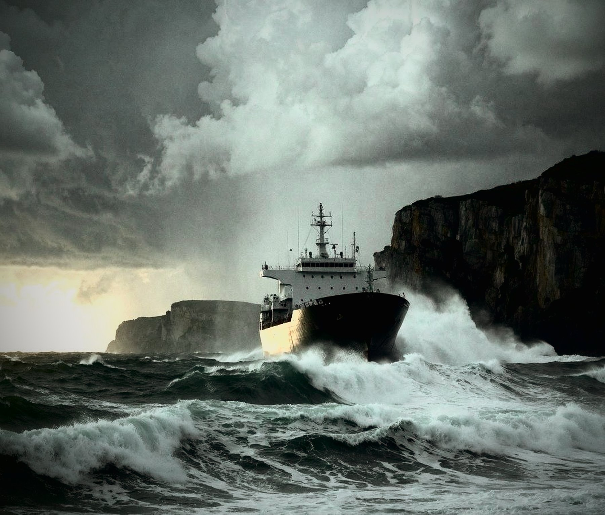

Examples of recent Special Projects.
Board advice, strategy and governance.
We assemble boards and advisory teams, set strategy and design organisations, and help leadership think through their most sensitive decisions.
Steering leadership teams through the Hormuz disruption
Nearly sixty confidential board briefings as the Strait of Hormuz closed.